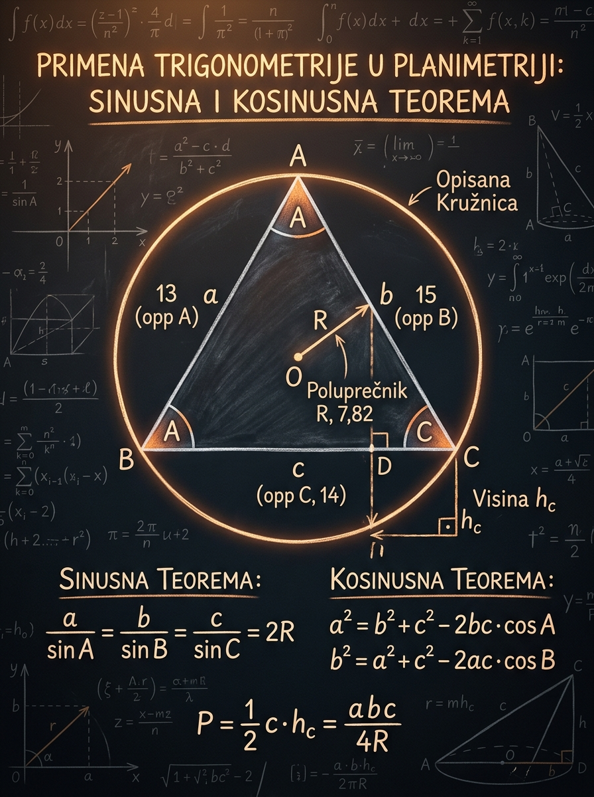

Kako da bez lutanja izabereš pravu teoremu, kako da rešiš kosougli trougao i kako da površinu dobiješ direktno iz dve stranice i zahvaćenog ugla.
Matoteka znanje · Lekcija 43
Primena trigonometrije u planimetriji Sinusna i kosinusna teorema
Kada trougao nije pravougli, Pitagorina teorema više nije dovoljna. Tada na scenu stupaju sinusna i kosinusna teorema: alati koji ti dozvoljavaju da iz nekoliko pažljivo povezanih podataka odrediš nepoznate stranice, uglove i površinu, baš onako kako se to traži na prijemnim zadacima.
Najčešća greška nije račun, nego pogrešan prvi izbor. Mnogi zamene sinusnu i kosinusnu teoremu ili previdе da SSA podaci mogu dati dva različita trougla.
Na ispitu se teoreme često pojavljuju sakrivene u većem planimetrijskom crtežu: dijagonala četvorougla, presek trapeza ili pomoćna duž pretvaraju figuru u trougao koji treba rešiti.

Zašto je ova lekcija važna
Ovo je trenutak kada planimetrija izlazi iz pravouglog trougla
U školskim zadacima dugo se oslanjaš na Pitagorinu teoremu i elementarne formule. Međutim, čim se u zadatku pojavi kosougli trougao, obični alati više nisu dovoljni. Tada trigonometrija postaje most između crteža i broja: ona ti daje način da iz uglova dobiješ stranice, iz stranica uglove, a iz toga površinu i dalja planimetrijska zaključivanja.
Pitagorina teorema rešava samo pravougle trouglove. Kosinusna teorema je njeno prirodno proširenje na sve trouglove, pa je zato jedna od centralnih formula planimetrije.
Mnogi zadaci ne traže direktno stranicu, nego površinu, ugao između dijagonala, poluprečnik opisane kružnice ili visinu. Sve to često počinje rešavanjem jednog trougla.
Na prijemnom je dragoceno da odmah znaš šta radiš. Ova lekcija smanjuje lutanje: umesto da isprobavaš nasumične formule, prepoznaješ strukturu i štediš vreme.
Šta se najčešće dogodi na ispitu?
Zadatak ne kaže eksplicitno „primeni sinusnu teoremu”. Dobićeš, na primer, dve stranice trapeza i ugao, ili dijagonalu četvorougla koja deli figuru na dva trougla. Pravi posao je da prepoznaš skriveni trougao, pravilno obeležiš podatke i tek onda biraš teoremu.
Minimalni algoritam za svaki zadatak
1
Precrtaj i označi
Obavezno napiši koje su strane \(a,b,c\), a koji su uglovi \(A,B,C\). Ne preskači ovaj korak.
2
Pogledaj tip poznatih podataka
Ako znaš par „stranica naspram ugao”, misli na sinusnu. Ako znaš dve stranice i ugao između njih ili sve tri stranice, misli na kosinusnu.
3
Tek onda računaj površinu ili preostale uglove
U mnogim zadacima jedna teorema otvara vrata drugoj. To je normalno: prvo nađeš stranicu, pa zatim ugao, pa tek onda površinu.
Oznake
Pravilna notacija je pola rešenja
Skoro svaka greška u ovoj oblasti može se pratiti do loše oznake. Pravilo je jednostavno: stranica i ugao sa istim slovom stoje jedan naspram drugog. To mora postati automatski refleks.
Stranica \(a\) leži naspram ugla \(A\), stranica \(b\) naspram ugla \(B\), a stranica \(c\) naspram ugla \(C\).
U trouglu redosled uglova i naspramnih stranica je isti. Ovo je brz kvalitativni test razumnosti rezultata.
Sinusna i kosinusna teorema često daju samo deo slike. Treći ugao skoro uvek dobijaš iz zbira \(180^\circ\).
Učenikova perspektiva
Ako brzopleto napišeš \(\frac{a}{\sin B}\) ili \(\frac{c}{\sin A}\), sve dalje može izgledati uredno, ali je pogrešno od prve linije. Zato pre svakog računa zastani i bukvalno proveri: da li sam upario svaku stranicu sa njenim naspramnim uglom?
Dobra navika: uz crtež uvek dopiši malu rečenicu „\(a\) je naspram \(A\)”. To zvuči trivijalno, ali na prijemnom spašava bodove.
Brzi kvalitativni primer
U trouglu je \(B=70^\circ\), \(C=45^\circ\), a \(b=14\). Bez računanja, da li je \(c\) veće ili manje od \(14\)?
1
Uporedi uglove
Pošto je \(70^\circ > 45^\circ\), ugao \(B\) je veći od ugla \(C\).
2
Prevedi na stranice
Većem uglu odgovara veća naspramna stranica. Dakle \(b>c\).
3
Zaključak
Pošto je \(b=14\), mora važiti \(c<14\). Ovakve procene pomažu da proveriš da li je broj koji si dobio smislen.
Mikro-provera: ako je najveći ugao trougla \(A\), koja je najveća stranica?
Najveća je stranica \(a\), jer leži naspram najvećeg ugla \(A\).
Strategija izbora
Prva odluka je važnija od samog računa
Na istom trouglu možeš koristiti više formula, ali nisu sve jednako praktične. Cilj nije da na silu upotrebiš omiljenu teoremu, nego da izabereš onu koja najdirektnije odgovara datim podacima.
| Šta znaš | Prvi alat | Zašto |
|---|---|---|
| Jednu stranicu i njoj naspramni ugao, plus još jedan ugao ili još jednu stranicu | Sinusna teorema | Ona direktno upoređuje parove „stranica naspram ugao”. |
| Dve stranice i ugao između njih (SAS) | Kosinusna teorema | Odmah daje treću stranicu bez zaobilaznih koraka. |
| Sve tri stranice (SSS) | Kosinusna teorema unazad | Iz tri stranice možeš dobiti ugao preko kosinusa. |
| Dve stranice i zahvaćen ugao, a traži se površina | \(P=\frac12 xy\sin \theta\) | To je najkraći put: ne moraš prvo da tražiš visinu ili treću stranicu. |
| Posle kosinusne hoćeš preostale uglove | Sinusna teorema | Vrlo često se obe teoreme koriste u istom zadatku, jedna za drugom. |
Važan prijemni uvid
Nema ništa „nečisto” u tome da u istom zadatku prvo upotrebiš kosinusnu, a zatim sinusnu teoremu. Naprotiv, to je često najefikasnije rešenje. Na prijemnom se vrednuje tačnost i brzina, ne formalna „čistoća” metode.
Brzi izbor na primeru
Dato je \(b=10\), \(c=13\) i \(A=52^\circ\). Šta radiš prvo ako tražiš \(a\), zatim \(B\), a onda površinu?
1
Prepoznaj SAS podatke
Znaš dve stranice i ugao između njih. To je idealan teren za kosinusnu teoremu.
2
Nađi \(a\) kosinusnom
Kada dobiješ treću stranicu, trougao je gotovo „otključan”.
3
Pređi na sinusnu teoremu
Sada već imaš par \(a \leftrightarrow A\), pa lako dobijaš \(B\), a zatim i \(C\).
4
Površinu uzmi direktno
Pošto su \(b\), \(c\) i ugao \(A\) poznati od početka, najbrže je koristiti \(P=\frac12 bc\sin A\).
Pedagoška poenta
Učenici često pokušavaju da odmah izračunaju sve „istom formulom”. To skoro nikada nije optimalno. Pametnije je da za svaki traženi podatak pitaš: koja formula sada koristi baš ono što već imam?
Drugim rečima, ne biraš omiljenu formulu, nego biraš formulu koja u tom trenutku radi najmanje posla.
Sinusna teorema
Sinusna teorema povezuje svaku stranicu sa njenim naspramnim uglom
Ovo je osnovna formula kada u trouglu znaš makar jedan pouzdan par „stranica naspram ugao”. Intuitivno, ona govori da se veličina stranice menja u skladu sa sinusom naspramnog ugla. Veći ugao traži veću stranicu, ali ne linearno, nego preko funkcije sinus.
Najčešće koristiš baš ovaj zapis. On omogućava da iz jednog poznatog para dobiješ nepoznatu stranicu ili ugao.
Gde je \(R\) poluprečnik opisane kružnice. Ovo je koristan bonus za prijemne zadatke sa opisanim krugom.
Ako imaš jednu stranicu i dva ugla, ili poznat par strana-ugao plus još jednu stranicu, sinusna teorema je prvi kandidat.
Ovo je dvosmisleni slučaj. Zato ne smeš automatski pretpostaviti da je rešenje jedinstveno.
Intuicija
Sinusna teorema je posebno prirodna kada je trougao „uglovno” poznat. Ako znaš dve veličine uglova, oblik trougla je skoro određen, a jedna stranica samo „skaluje” celu figuru. Tada sinusna teorema brzo prenosi tu skalu na ostale stranice.
- Prvo proveri da li je par pravilno uparen: \(a\) sa \(A\), \(b\) sa \(B\), \(c\) sa \(C\).
- Ne preskači računanje trećeg ugla ako ti nedostaje.
- Kada dobiješ vrednost sinusa ugla, proveri da li postoji i drugo moguće rešenje.
Primer 1: jedna stranica i dva ugla
U trouglu je \(A=32^\circ\), \(B=71^\circ\) i \(a=7\). Nađi \(b\) i \(c\).
1
Izračunaj treći ugao
\(C=180^\circ-32^\circ-71^\circ=77^\circ\).
2
Primenjuj sinusnu teoremu na \(b\)
\(\frac{b}{\sin 71^\circ}=\frac{7}{\sin 32^\circ}\), pa je \(b=\frac{7\sin 71^\circ}{\sin 32^\circ}\approx 12.49\).
3
Isto za \(c\)
\(\frac{c}{\sin 77^\circ}=\frac{7}{\sin 32^\circ}\), pa je \(c=\frac{7\sin 77^\circ}{\sin 32^\circ}\approx 12.88\).
4
Proveri smisao
Pošto je \(C\) najveći ugao, strana \(c\) mora biti najveća. Dobijeni rezultat to potvrđuje.
Primer 2: dvosmisleni SSA slučaj
Dato je \(A=35^\circ\), \(a=8\), \(b=11\). Odredi koliko trouglova postoji i nađi njihove uglove.
1
Upotrebi test sa visinom
\(h=b\sin A=11\sin 35^\circ\approx 6.31\).
2
Uporedi \(a\), \(h\) i \(b\)
Pošto važi \(h<a<b\), postoje dva različita trougla.
3
Nađi ugao \(B\)
\(\sin B=\frac{b\sin A}{a}=\frac{11\sin 35^\circ}{8}\approx 0.789\), pa su moguća rešenja \(B_1\approx 52.1^\circ\) i \(B_2\approx 127.9^\circ\).
4
Dobij ugao \(C\)
\(C_1=180^\circ-35^\circ-52.1^\circ\approx 92.9^\circ\), a \(C_2=180^\circ-35^\circ-127.9^\circ\approx 17.1^\circ\).
5
Zaključak
Isti podaci daju dva različita trougla. To je upravo razlog zašto SSA nikada ne smeš rešavati mehanički.
Kako da misliš o SSA slučaju?
Ako je ugao \(A\) oštar, strana \(b\) određuje visinu \(h=b\sin A\). Strana \(a\) tada može:
- biti kraća od \(h\): trougao ne postoji
- biti jednaka \(h\): postoji jedan pravougli trougao
- biti između \(h\) i \(b\): postoje dva trougla
- biti bar jednaka \(b\): postoji jedan trougao
Ako je \(A\) tup ugao, situacija je jednostavnija: trougao može postojati samo ako je \(a>b\), i tada je rešenje jedinstveno.
Mikro-provera: ako je \(A\) oštar i važi \(a<b\sin A\), koliko trouglova postoji?
Ne postoji nijedan, jer je strana \(a\) prekratka da bi „dohvatila” osnovu trougla.
Kosinusna teorema
Kosinusna teorema je Pitagora sa korekcijom za ugao
Ako znaš dve stranice i ugao između njih, ili sve tri stranice pa tražiš ugao, kosinusna teorema je najsigurniji alat. Njena velika vrednost je u tome što radi i kada trougao nije pravougli, a usput ti daje i geometrijski uvid: znak kosinusa odmah govori da li je ugao oštar, prav ili tup.
Treća stranica se dobija iz dve poznate stranice i ugla između njih.
Ista ideja važi za svaki ugao. Samo uvek pazi da koristiš ugao između dve poznate stranice.
Kada je ugao pravi, \(\cos 90^\circ=0\), pa se korekcioni član gubi.
Kada znaš sve tri stranice, ovim dobijaš ugao \(A\).
Ovo je moćan mentalni test: najveća strana ti često odmah otkriva tip trougla.
Intuicija
Formula \(a^2=b^2+c^2-2bc\cos A\) govori da treća stranica ne zavisi samo od dužina \(b\) i \(c\), nego i od toga koliko se trougao „otvara” kod ugla \(A\). Što je ugao veći, strana \(a\) postaje duža.
- Za oštar ugao je \(\cos A>0\), pa se oduzima pozitivan broj.
- Za pravi ugao je \(\cos A=0\), pa dobijaš Pitagoru.
- Za tup ugao je \(\cos A<0\), pa se zapravo dodaje pozitivan broj.
Primer 1: dve stranice i ugao između njih
Dato je \(b=9\), \(c=12\) i \(A=60^\circ\). Nađi \(a\).
1
Postavi kosinusnu teoremu
\(a^2=9^2+12^2-2\cdot 9\cdot 12\cos 60^\circ\).
2
Uvrsti poznatu vrednost
\(\cos 60^\circ=\frac12\), pa je \(a^2=81+144-108=117\).
3
Završi račun
\(a=\sqrt{117}=3\sqrt{13}\approx 10.82\).
Primer 2: sve tri stranice, pa ugao
U trouglu su \(a=5\), \(b=7\), \(c=10\). Nađi ugao \(C\) i odredi da li je trougao oštar ili tup.
1
Najpre prepoznaj najveću stranicu
Najveća je \(c=10\), pa očekujemo da je ugao \(C\) najveći.
2
Primeni kosinusnu teoremu unazad
\(\cos C=\frac{a^2+b^2-c^2}{2ab}=\frac{25+49-100}{2\cdot 5\cdot 7}=-\frac{13}{35}\).
3
Zaključi o uglu
Pošto je \(\cos C<0\), ugao \(C\) je tup. Numerički, \(C\approx 111.8^\circ\).
Zašto je ovaj primer važan
Na prijemnom se često traži samo vrsta trougla ili najveći ugao, a ne kompletno rešavanje. Tada ti kosinusna teorema služi kao dijagnostički alat: ne moraš uvek ići do krajnjeg broja da bi znao šta se dešava u figuri.
Negativan kosinus znači tup ugao. To je jedna od najkorisnijih kratkih provera u planimetriji.
Mikro-provera: šta možeš odmah zaključiti ako važi \(a^2=b^2+c^2\)?
Ugao \(A\) je prav, pa je trougao pravougli sa hipotenuzom \(a\).
Površina
Formula za površinu nije nova magija, nego stara visina u novom obliku
Jedna od najlepših posledica trigonometrije u trouglu jeste to što površinu možeš računati i onda kada visina nije direktno poznata. Dovoljno je da znaš dve stranice i ugao između njih.
Ako znaš stranice \(b\) i \(c\) i ugao \(A\) između njih, površina se dobija odmah.
Možeš izabrati bilo koji par stranica i ugao između njih.
Formula je samo standardna površina \(\frac12\cdot \text{osnovica}\cdot \text{visina}\), ali je visina izražena preko sinusa.
Ovo sledi iz sinusne teoreme i korisno je u naprednijim zadacima sa opisanim poluprečnikom \(R\).
Primer: površina direktno iz dve stranice i ugla
Dato je \(b=10\), \(c=14\) i \(A=30^\circ\). Nađi površinu trougla.
1
Prepoznaj da je ugao zahvaćen
Ugao \(A\) leži između stranica \(b\) i \(c\), pa je formula \(\frac12 bc\sin A\) direktno primenljiva.
2
Uvrsti podatke
\(P=\frac12 \cdot 10 \cdot 14 \cdot \sin 30^\circ\).
3
Izračunaj
\(\sin 30^\circ=\frac12\), pa je \(P=70\cdot \frac12=35\).
Šta učenici često previdе
Formula za površinu radi samo kada je ugao između dve poznate stranice. Ako znaš dve stranice i neki treći ugao, formula nije direktna. Tada prvo moraš naći odgovarajući zahvaćeni ugao ili treću stranicu.
Drugim rečima: nije dovoljno „imam dve stranice i jedan ugao”. Mora biti baš ugao između tih stranica.
Mikro-provera: koju formulu za površinu koristiš ako znaš \(a\), \(b\) i ugao \(C\)?
Koristiš \(P=\frac12 ab\sin C\), jer je \(C\) ugao između stranica \(a\) i \(b\).
Interaktivna laboratorija
Posmatraj kako ugao i dužine menjaju ceo trougao
U režimu kosinusne teoreme menjaj dve stranice i zahvaćen ugao, pa prati kako raste ili opada treća stranica i površina. U režimu sinusne teoreme posmatraj dvosmisleni SSA slučaj: isti podaci nekad daju dva trougla, a nekad nijedan.
Canvas laboratorija trougla
Koristi kontrole i poredi sliku sa objašnjenjem desno. Laboratorija nije dekoracija: ona vizuelno pokazuje zašto formule rade.
U SSA režimu ugao \(A\) je namerno ograničen na oštre uglove, jer se upravo tada najjasnije vidi dvosmisleni slučaj.
Posmatraj kako se pri promeni ugla \(A\) menja treća stranica \(a\) i površina trougla.
Kako da čitaš SSA laboratoriju?
Duž \(b\) i ugao \(A\) određuju položaj tačke \(C\). Oko tačke \(C\) se crta kružnica poluprečnika \(a\). Broj preseka te kružnice sa osnovnom polupravom daje broj mogućih trouglova.
Vođeni primeri
Ovde se vidi kako se obe teoreme uklapaju u kompletno rešenje
Slede primeri nalik prijemnim zadacima: ne traži se samo jedna formula, nego čitav niz odluka. Obrati pažnju ne samo na račun, nego i na izbor redosleda koraka.
Primer 1: prvo kosinusna, pa sinusna, pa površina
Dato je \(b=8\), \(c=11\) i \(A=60^\circ\). Reši trougao i nađi njegovu površinu.
1
Nađi \(a\) kosinusnom teoremom
\(a^2=8^2+11^2-2\cdot 8\cdot 11\cos 60^\circ=64+121-88=97\), pa je \(a=\sqrt{97}\approx 9.85\).
2
Pređi na sinusnu teoremu
\(\frac{\sin B}{8}=\frac{\sin 60^\circ}{\sqrt{97}}\), pa je \(\sin B\approx 0.703\), odnosno \(B\approx 44.7^\circ\).
3
Izračunaj treći ugao
\(C=180^\circ-60^\circ-44.7^\circ\approx 75.3^\circ\).
4
Površinu uzmi najkraćim putem
\(P=\frac12\cdot 8\cdot 11\cdot \sin 60^\circ=22\sqrt{3}\approx 38.1\).
Primer 2: dva ugla i jedna stranica
Dato je \(A=45^\circ\), \(B=75^\circ\) i \(a=8\). Nađi preostale stranice.
1
Treći ugao je odmah poznat
\(C=180^\circ-45^\circ-75^\circ=60^\circ\).
2
Nađi \(b\)
\(b=\frac{8\sin 75^\circ}{\sin 45^\circ}=4(\sqrt{3}+1)\approx 10.93\).
3
Nađi \(c\)
\(c=\frac{8\sin 60^\circ}{\sin 45^\circ}=4\sqrt{6}\approx 9.80\).
4
Provera razumnosti
Najveći ugao je \(75^\circ\), zato je \(b\) najveća strana. Rezultat je u skladu sa tim.
Primer 3: iz tri stranice do ugla i površine
U trouglu su \(a=7\), \(b=9\), \(c=12\). Nađi najveći ugao i površinu.
1
Najveći ugao je naspram najveće stranice
Pošto je \(c=12\) najveća strana, najveći ugao je \(C\).
2
Nađi \(\cos C\)
\(\cos C=\frac{7^2+9^2-12^2}{2\cdot 7\cdot 9}=\frac{49+81-144}{126}=-\frac{1}{9}\).
3
Zaključi o uglu
Pošto je kosinus negativan, ugao \(C\) je tup, a numerički \(C\approx 96.4^\circ\).
4
Nađi sinus tog ugla
\(\sin C=\sqrt{1-\cos^2 C}=\sqrt{1-\frac{1}{81}}=\frac{4\sqrt{5}}{9}\).
5
Izračunaj površinu
\(P=\frac12 ab\sin C=\frac12\cdot 7\cdot 9\cdot \frac{4\sqrt{5}}{9}=14\sqrt{5}\).
Šta ovaj primer pokazuje
Nekad trougao rešavaš „unazad”: iz tri stranice dobiješ ugao kosinusnom teoremom, zatim iz tog ugla sinus ili površinu. To je tipična prijemna struktura, naročito u zadacima gde je tražen najveći ugao, tip trougla ili površina figure koja se može razložiti na trouglove.
Zapamti: kosinusna teorema nije samo formula za treću stranicu. Ona je i alat za dijagnozu ugla.
Ključne formule
Mali pregled formule i kada se koriste
Ovo nije sekcija za slepo bubanje. Cilj je da svaku formulu vežeš za situaciju u kojoj je najkorisnija.
Kada imaš jedan poznat par „stranica naspram ugao”.
Kada znaš dve stranice i zahvaćen ugao, ili sve tri stranice pa tražiš ugao.
Kada znaš dve stranice i ugao između njih.
Korisno u zadacima sa opisanim krugom ili kada treba povezati trougao i kružnicu.
Posebno korisno kada ne traže ceo ugao, nego tip trougla.
Nije prva formula koju učiš, ali je veoma korisna u naprednijim kombinovanim zadacima.
Česte greške
Ovo su greške koje odnose bodove i kada je ideja dobra
Greške u ovoj oblasti retko nastaju zato što je formula „teška”. Obično su uzrokovane brzopletošću i lošim čitanjem crteža ili podataka.
U sinusnoj teoremi učenik napiše \(\frac{a}{\sin B}\) umesto \(\frac{a}{\sin A}\). Od tog trenutka sve dalje izgleda uredno, ali je pogrešno.
Formula \(a^2=b^2+c^2-2bc\cos A\) koristi ugao između stranica \(b\) i \(c\). Ako je dat neki drugi ugao, formula nije direktna.
Kada su dati \(A\), \(a\) i \(b\), mnogi nađu samo jedan ugao \(B\) preko arkus sinusa i stanu. Moraš proveriti postoji li i drugo rešenje.
Formula \(\frac12 bc\sin A\) radi samo jer je \(A\) ugao između \(b\) i \(c\). Ako to nije slučaj, rezultat nema geometrijsko opravdanje.
Ako zadatak radiš u stepenima, kalkulator mora biti na DEG. Pogrešan mod daje brojeve koji deluju „normalno”, ali su potpuno pogrešni.
Ako je \(C\) najveći ugao, a dobiješ da je \(c\) najmanja stranica, nešto je pošlo naopako. Uvek radi kratku logičku proveru.
Veza sa prijemnim zadacima
Na prijemnom se teoreme retko pojavljuju same
Pravi zadatak obično kombinuje više tema: sličnost, površinu, četvorougao, krug, visinu ili dijagonalu. Sinusna i kosinusna teorema tada rade kao univerzalni alat u pozadini.
Dijagonala romba, trapeza ili četvorougla često izdvoji trougao koji treba rešiti. Kad ga rešiš, ostatak figure postaje običan račun.
Kada zadatak daje SSA podatke, proveri broj mogućih trouglova pre nego što napišeš konačan odgovor.
Ako znaš dve stranice i zahvaćen ugao, površinu možeš dobiti odmah. Ne gubi vreme na nepotrebne međukorake.
Prijemna check-lista pre nego što kreneš da računaš
- Da li su strane i uglovi pravilno označeni?
- Da li znam jedan pouzdan par „stranica naspram ugao”?
- Da li je dati ugao zahvaćeni ugao između dve poznate stranice?
- Da li postoji mogućnost dva rešenja?
- Da li rezultat ima smisla u odnosu na najveći ugao i najveću stranicu?
Vežbe
Probaj sam, pa otvori rešenje
Zadatke rešavaj bez gledanja u rešenje. Posle svakog odgovora obavezno proveri da li su redosled uglova i redosled stranica logični.
Jedna stranica i dva ugla
U trouglu je \(A=40^\circ\), \(B=65^\circ\) i \(a=6\). Nađi \(b\) i \(c\).
Rešenje
Najpre je \(C=180^\circ-40^\circ-65^\circ=75^\circ\).
\[ b=\frac{6\sin 65^\circ}{\sin 40^\circ}\approx 8.46,\qquad c=\frac{6\sin 75^\circ}{\sin 40^\circ}\approx 9.01. \]
Dve stranice i zahvaćeni ugao
Dato je \(b=7\), \(c=10\) i \(A=60^\circ\). Nađi \(a\).
Rešenje
Primeni kosinusnu teoremu:
\[ a^2=7^2+10^2-2\cdot 7\cdot 10\cos 60^\circ=49+100-70=79. \]
Zato je \(a=\sqrt{79}\approx 8.89\).
Dvosmisleni SSA slučaj
Dato je \(A=30^\circ\), \(a=8\), \(b=10\). Odredi broj mogućih trouglova.
Rešenje
Računaj visinu: \(h=b\sin A=10\cdot \frac12=5\).
Pošto je \(h<a<b\), odnosno \(5<8<10\), postoje dva trougla.
Dodatno, \(\sin B=\frac{10\sin 30^\circ}{8}=\frac58\), pa su \(B_1\approx 38.68^\circ\) i \(B_2\approx 141.32^\circ\).
Površina i treća stranica
Dato je \(b=12\), \(c=9\) i \(A=45^\circ\). Nađi površinu i stranicu \(a\).
Rešenje
\[ P=\frac12\cdot 12\cdot 9\cdot \sin 45^\circ=54\cdot \frac{\sqrt{2}}{2}=27\sqrt{2}. \]
Za treću stranicu:
\[ a^2=12^2+9^2-2\cdot 12\cdot 9\cos 45^\circ =225-108\sqrt{2}, \] pa je \(a\approx 8.50\).
Najveći ugao i površina
U trouglu su \(a=6\), \(b=7\), \(c=8\). Nađi najveći ugao i površinu.
Rešenje
Najveći ugao je \(C\), jer je \(c=8\) najveća stranica.
\[ \cos C=\frac{6^2+7^2-8^2}{2\cdot 6\cdot 7}=\frac{21}{84}=\frac14, \] pa je \(C\approx 75.5^\circ\).
Dalje je \(\sin C=\sqrt{1-\frac{1}{16}}=\frac{\sqrt{15}}{4}\), pa
\[ P=\frac12\cdot 6\cdot 7\cdot \frac{\sqrt{15}}{4}=\frac{21\sqrt{15}}{4}. \]
Glavni uvid lekcije
Kosinusna teorema ti kaže kako ugao menja treću stranicu. Sinusna teorema ti kaže kako su naspramne stranice i uglovi međusobno usklađeni. Formula za površinu ti pokazuje da se visina može „sakriti” unutar sinusa. Kad ove tri ideje vidiš kao jednu celinu, planimetrijski zadaci postaju mnogo pregledniji.
Završni rezime
Šta moraš da zapamtiš posle ove lekcije
Ako ove stavke ostanu stabilne u glavi, imaćeš vrlo čvrst oslonac za većinu prijemnih zadataka iz trouglova i planimetrije.
- Oznake su presudne: \(a\) je naspram \(A\), \(b\) naspram \(B\), \(c\) naspram \(C\).
- Sinusna teorema je prvi izbor kada znaš jedan par „stranica naspram ugao”.
- Kosinusna teorema je prvi izbor za SAS i SSS situacije, a u pravom uglu se svodi na Pitagorinu.
- SSA slučaj može dati \(0\), \(1\) ili \(2\) trougla, pa broj rešenja moraš proveriti posebno.
- Površina se najbrže dobija formulom \(\frac12 xy\sin \theta\) kada znaš dve stranice i zahvaćeni ugao.
- Sledeći logičan korak je primena ovih alata na četvorouglove, mnogouglove i zadatke sa krugom, gde se figura često razlaže na trouglove.